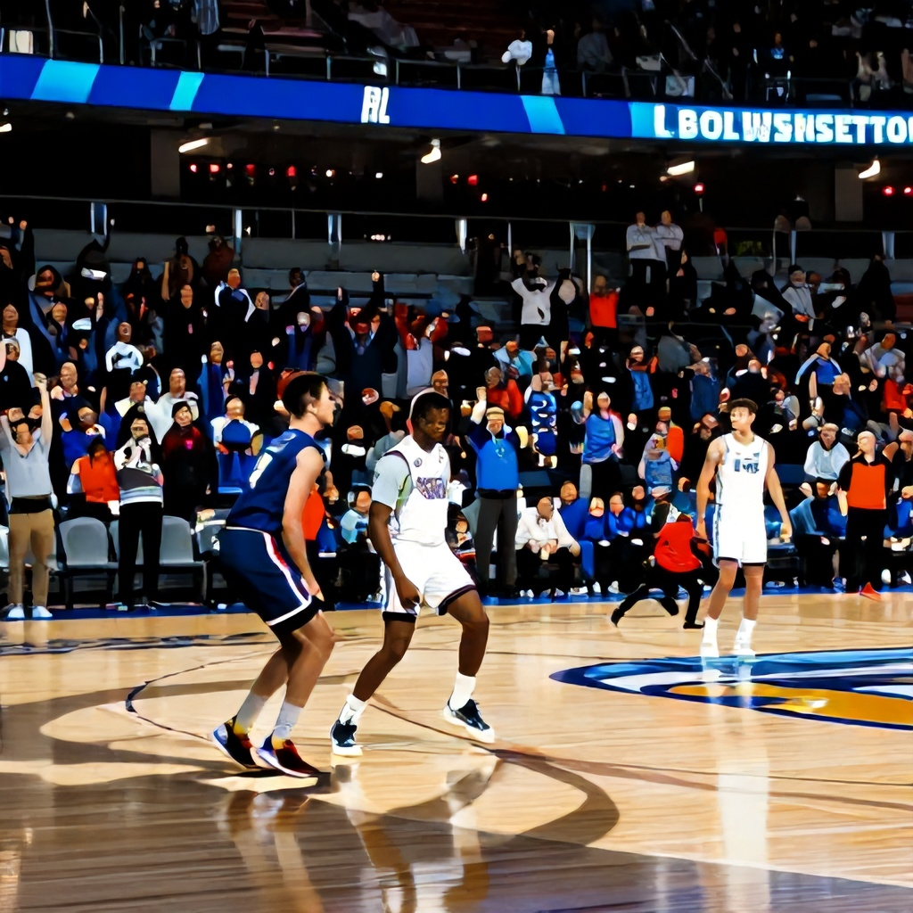

With Week 2 of the CFL season underway, fans are treated to another weekend of high-octane Canadian football action. The league’s most anticipated matchups are already set to unfold, with the Winnipeg Blue Bombers hosting the Hamilton Tiger-Cats on Friday night, followed by the Montreal Alouettes and Toronto Argonauts taking the field on Saturday, and the Saskatchewan Roughriders facing off against the BC Lions on Sunday.
While the Hamilton-Winnipeg game has already concluded, the focus now shifts to the remaining contests. Here’s a breakdown of each game, including key storylines, betting angles, and what to expect from the CFL’s second week.
Winnipeg Blue Bombers vs. Hamilton Tiger-Cats – Final Result
The first game of the weekend saw the Winnipeg Blue Bombers take on the Hamilton Tiger-Cats. While no final score is provided, the betting line indicated a strong favorite for Winnipeg, with the Blue Bombers listed at -105 against the spread. This suggests a solid performance by the home team, who are known for their defensive resilience and ability to control the tempo of games.
The Tiger-Cats, despite being underdogs, are a competitive squad that can capitalize on turnovers and special teams plays. However, the Blue Bombers’ consistency in the red zone and their ability to limit big plays makes them a safer bet in this matchup.
Montreal Alouettes vs. Toronto Argonauts – Betting Preview
The second game of the weekend sees the Montreal Alouettes host the Toronto Argonauts on Saturday at 1 AM ET. While the full odds are not yet available, both teams are expected to be evenly matched, with a spread of -7 for the Alouettes and -7 for the Argonauts. This indicates a close contest likely to come down to special teams and turnover margin.
Montreal’s offense has shown flashes of brilliance, particularly in the passing game, while Toronto has been more consistent defensively. The total line is set at 51.5, suggesting a low-scoring affair where field position and time of possession could be decisive factors.
Saskatchewan Roughriders vs. BC Lions – Betting Preview
The third and final game of the weekend brings together the Saskatchewan Roughriders and BC Lions on Sunday at 1 AM ET. At first glance, this looks like a balanced matchup with the Roughriders listed at +110 and the Lions at +155, indicating a slight edge for Saskatchewan.
The Roughriders have a potent offense led by a strong quarterback and an effective ground game, while BC’s defense has been a concern throughout the early portion of the season. With the total set at 52.5, expect a back-and-forth battle where the team that controls the line of scrimmage will likely emerge victorious.
Key Takeaways
As the CFL continues its second week, the focus remains on momentum-building performances and early-season adjustments. The Blue Bombers’ win over Hamilton sets a positive tone for the rest of the season, while the matchups between Montreal and Toronto, and Saskatchewan and BC, promise to be closely contested affairs.
Betting opportunities remain strong across all three games, especially if you’re looking for value in the underdog side of the spreads. As always, keep an eye on injury reports and weather conditions that could impact game flow.
Week 2 is shaping up to be a pivotal one for many teams, and these matchups offer excellent opportunities to gauge how well each squad can perform under pressure.